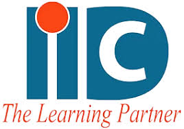
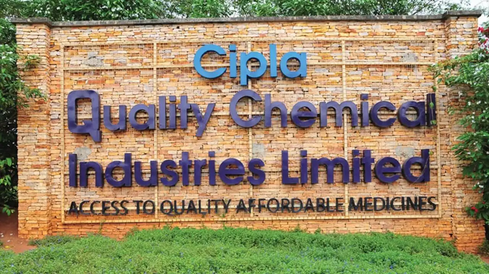
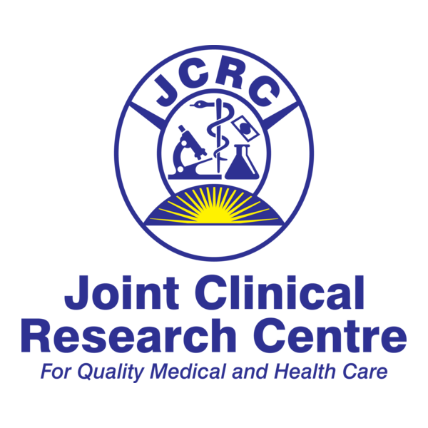
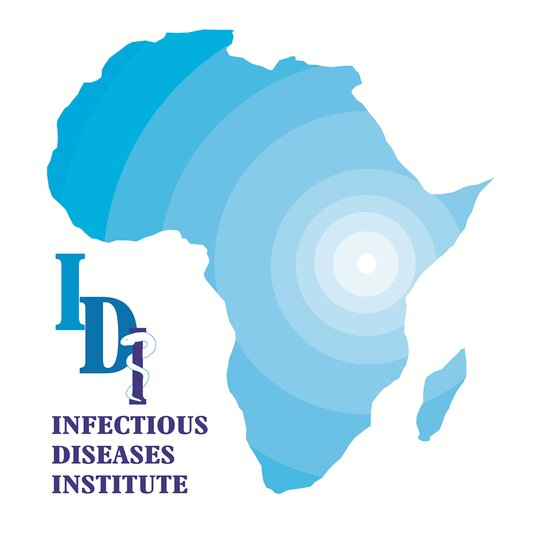
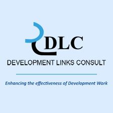

Our Mission
To provide best in class customized and bespoke tours and travel solutions through reliable, efficient, and timely service.
About Augur
Meet the local team behind your journey through Uganda and East Africa. Discover our approach to travel, our values and the organisations we support.
Company
Founded in December 2011, Augur Tours and Travel Limited is one of the leading tours and travel solutions providers in Uganda.
Augur belongs to the Association of Uganda Tour and Travel Operators and is licensed by the Uganda Tourism Board.
Its offices support safari planning, hotel bookings, airport transfers, corporate hires, cargo movement, and travel logistics across Uganda, Rwanda, East Africa, and Central Africa.
Licensed by Uganda Tourism Board
To provide best in class customized and bespoke tours and travel solutions through reliable, efficient, and timely service.
To become the leading provider of tours and travel solutions in the East and Central African region.
Core Values
Collaborative excellence in every service delivered.
Uncompromising quality in every journey undertaken.
Transparent and trustworthy communication with every client.
Determined support when travel logistics get complex.
Why Augur
Ugandan routes, border connections, park timing, hotels, and transport realities handled by a local team.
Share dates, travelers, destination, budget, and comfort level so the team can quote properly.
Partner history supports business travel, event transport, and scheduled movement.
Respect for wildlife, communities, conservation rules, and transparent pricing.
How It Works
Tell us your destination, dates, group size, budget, and must-see experiences.
Augur matches transport, hotels, guides, permits, and route timing to your trip.
Review the quote, agree on logistics, and prepare permit or pickup information.
Keep communication open by phone or WhatsApp before, during, and after the trip.
Trusted Partnerships
Corporate mobility, staff transport, airport transfers, and cargo movement for teams that need calm logistics and responsive support.
Delivery Record
Augur supports structured transport needs for NGOs, health organizations, insurers, beverage teams, research institutions, and consultants.

Corporate staff transportation, airport transfers, and cargo delivery.
2023 - PresentStaff transportation and cargo delivery.
2021 - PresentStaff transport and airport transfer services.
2023 - Present
Staff transport services.
2020 - 2022
Staff transport and cargo delivery.
2022 - To dateStaff transport services.
2025 - To date
Staff transport services.
2024 - Present
Consultancy transport services.
2021 - PresentOffices
4th Floor Room D5B, Uganda
View on Google Maps